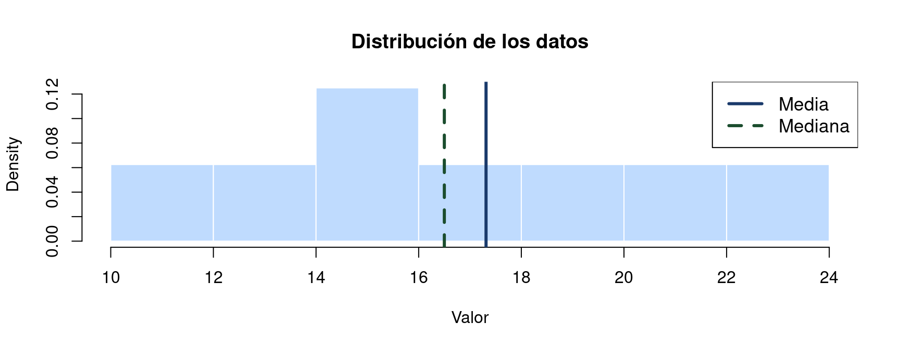

[1] 20.86667[1] 7.28[1] 71.5Departamento de Estadı́stica, Sede Bogotá
Tasas, Razones, Proporciones
y Medidas de Tendencia Central
Herramientas esenciales para resumir y comparar datos
Bioestadística Fundamental — Departamento de Estadística, UNAL Bogotá
Tasas, Razones y Proporciones
Herramientas para comparar e interpretar cantidades
Calcule e interprete cada tasa:
Calcule e interprete cada razón:
En un cultivo, 4 kg de fertilizante son suficientes para 8 plantas. ¿Cuántos kg se necesitan para 20 plantas, manteniendo la misma proporción?
En una encuesta, 15 de cada 30 estudiantes aprueban un examen. Si se mantiene la misma proporción, ¿cuántos aprobarían en un grupo de 80?
| Concepto | Definición | Unidades | Ejemplo |
|---|---|---|---|
| Tasa | Razón entre magnitudes con unidades distintas | Compuestas (km/h) | 200 kg/ha |
| Razón | Comparación entre cantidades de la misma clase | Adimensional | 3:1 (maíz:fríjol) |
| Proporción | Igualdad entre dos razones | Adimensional (0 a 1) | \(p = 18/30 = 0{,}6\) |
| Porcentaje | Proporción expresada en base 100 | % | 60 % |
Las tasas responden a “¿cuánto X por unidad de Y?”; las razones responden a “¿cuántas veces?”; las proporciones responden a “¿qué parte del total?”
Medidas de Tendencia Central
Media, mediana y moda
Se registraron las edades (años) de 15 personas:
18, 20, 19, 19, 21, 22, 20, 23, 21, 24, 19, 20, 22, 21, 24
Calcule la edad promedio del grupo.
A 50 estudiantes se les preguntó cuántas horas dormían por noche. Los resultados se agruparon así:
| \(x_i\) (horas) | \(f_i\) | \(f_i x_i\) |
|---|---|---|
| 4 | 2 | 8 |
| 5 | 5 | 25 |
| 6 | 7 | 42 |
| 7 | 12 | 84 |
| 8 | 14 | 112 |
| 9 | 7 | 63 |
| 10 | 3 | 30 |
| Total | 50 | 364 |
Se registró el peso (kg) de 20 animales en intervalos:
| Intervalo (kg) | \(x_i\) (marca) | \(f_i\) | \(f_i x_i\) |
|---|---|---|---|
| 50 – 60 | 55 | 4 | 220 |
| 60 – 70 | 65 | 6 | 390 |
| 70 – 80 | 75 | 5 | 375 |
| 80 – 90 | 85 | 3 | 255 |
| 90 – 100 | 95 | 2 | 190 |
| Total | — | 20 | 1 430 |
[1] 20.86667[1] 7.28[1] 71.5Paso previo indispensable: ordenar los datos de menor a mayor.
Datos: 4, 6, 5, 7, 3, 8, 6, 5, 9, 7, 4, 6, 10. Calcule la mediana.
Datos: 12, 15, 18, 20, 14, 16, 19, 17, 13, 21, 22, 11, 23, 24. Calcule la mediana.
Procedimiento:
| \(x_i\) | \(f_i\) | \(F_i\) |
|---|---|---|
| 2 | 2 | 2 |
| 3 | 3 | 5 |
| 4 | 4 | 9 |
| 5 | 2 | 11 |
| 6 | 1 | 12 |
| 7 | 1 | 13 |
Tiempo (min) en completar una rutina de ejercicio (\(N=30\)):
| Intervalo | \(f_i\) | \(F_i\) |
|---|---|---|
| 0 – 10 | 3 | 3 |
| 10 – 20 | 5 | 8 |
| 20 – 30 | 9 | 17 |
| 30 – 40 | 7 | 24 |
| 40 – 50 | 6 | 30 |
\(N/2 = 15\). La posición 15 cae en el intervalo [20 – 30] (donde \(F_i=17\)).
Datos: 18, 20, 22, 20, 19, 21, 20, 22, 23, 20, 24, 21, 25, 27, 20
Datos ordenados: 18, 19, 20, 20, 20, 20, 20, 21, 21, 22, 22, 23, 24, 25, 27.
El valor 20 aparece 5 veces — es el de mayor frecuencia. \[Mo = 20\,\text{años}\] La edad más frecuente en el grupo es 20 años.Número de trabajos entregados por 16 estudiantes:
| \(x_i\) | \(f_i\) |
|---|---|
| 1 | 2 |
| 2 | 4 |
| 3 | 6 |
| 4 | 3 |
| 5 | 1 |
| Total | 16 |
Gasto semanal (miles de pesos) de 35 estudiantes:
| Gasto (\(×10^3\)) | \(f_i\) |
|---|---|
| 0 – 20 | 4 |
| 20 – 40 | 6 |
| 40 – 60 | 12 |
| 60 – 80 | 8 |
| 80 – 100 | 5 |
Intervalo modal: [40 – 60] (mayor frecuencia: 12).
| Medida | Mejor cuando… | Evitar cuando… |
|---|---|---|
| Media | Distribución simétrica, sin valores atípicos. | Hay valores extremos que distorsionan el promedio. |
| Mediana | Distribución asimétrica o con atípicos. | Se necesita una medida algebraicamente tratable. |
| Moda | Datos cualitativos o cuando interesa el valor más típico. | Los datos tienen pocas repeticiones (puede ser poco informativa). |
En una distribución simétrica (como la normal): media = mediana = moda. Cuando hay sesgo positivo: media > mediana > moda. Cuando hay sesgo negativo: media < mediana < moda.
Un solo valor atípico puede desplazar significativamente la media, mientras la mediana permanece casi estable.
Media : 17.31 Mediana : 16.5 Moda : 16 
Ejercicios para resolver en clase
Tasas, razones, proporciones y medidas de tendencia central
En una finca cacaotera del Magdalena Medio santandereano se recolectó información durante una jornada de cosecha.
Además, se seleccionaron 20 mazorcas y se registró su peso en gramos:
410, 425, 438, 442, 447, 452, 455, 458, 460, 462, 465, 468, 470, 472, 475, 478, 480, 485, 490, 498